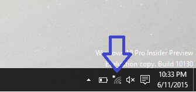
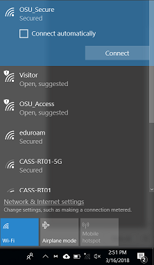
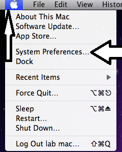
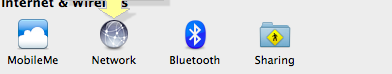

Wat2Search Demo
|
Registration
|
Accounts
|
Hardware
|
Software
|
|
Mobile Devices
|
Printers & Monitors
|
Networking & Wi-Fi
|
Can't find your issue? Dial (541) 737-8787 |
| How do I sign up for classes? |
| I'm getting an error message registering for classes |
| How do I get rid of holds? |
| New Students |
| Current Students |
| Former Students |
| Student Employees |
| Other Employees |
| How do I change my ONID password? |
| How do I set up/change my alternate contact information? |
|
| CN-Supported Devices |
| Personal Devices |
| Microsoft Office |
| Microsoft Outlook & Exchange |
| Web browsers (Chrome, Firefox, Edge, Safari) |
| Citrix & apps.oregonstate.edu |
| Other software |
| I need to connect to Wi-Fi |
| I need to set up my Gmail/Outlook |
| How do I print from my phone? |
| Printers |
| Monitors |
| Departmental/Office Printers |
| Personal Printers |
Because personal printers can be a network security liability,
we strongly recommend that you connect to a personal printer by
a USB cable if you use a personal printer on-campus.
|
| Help with wireless networks |
| Help with wired networks |
| Where is the Internet down? |
| Connecting to network drive(s) |
| My wireless connection is unstable |
| My computer/phone lost connection to the internet |
| I want to setup a wireless network |
| What is VPN? How do I set it up? |
For Windows (Windows 7 and above):
 
  If you need to enter a username and password, you will be prompted to enter them. Your device will tell you if you are connected, or if a connection cannot be established. If you need further help, please contact the IS Service Desk at (541) 737-8787. |